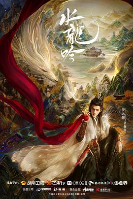

5.7
水龙吟
Whispers of Fate
2025
中国
评分 5.7
导演:
陈宙飞 / 钱敬午
演员:
罗云熙 / 肖顺尧 / 敖子逸 / 方逸伦 / 包上恩 / 陈瑶 / 林允
类型:
古装,奇幻,武侠
剧情简介
唐俪辞从故土“异境”踏入中原武林，他披着冷冽的目光，也背负着从未解开的灭门血案。昔日好友柳眼伏于暗处，风流客栈悄然成为叛乱温床。一次偶然，他接触到被封尘的「往生谱」异界武学，从此命运轨迹彻底扭转。他在十三楼的暗影中游走，用银辉武器与隐秘手法穿梭于剑王城、碧落宫与中原剑会之间。每一场剑会都是权力较量，每一次交锋都掀起江湖新局。池云的忠诚守候、沈郎魂的冷血复仇、风流客栈的花影梁桌，都在他人生中投下长长的影子。剧中以古典武侠与玄幻元素交织为底色：雾锁山峦、酒楼笙歌、剑锋震响、毒雾蔓延。一个传承千载的教派，一部失落的秘籍，一场关乎江湖未来的战争，主角不再只是抒写自己传奇，而是在黑暗中寻找信念。当他像幽影一般在危机中探路，又像剑锋一样直指邪恶，观众看到的不仅是一名武者的成长，更是一位宿命之人的觉醒。唐俪辞最终要守护的不只是武林和平，而是每个在暗处挣扎的人。《水龙吟》融合华夏千年文化与武侠情怀，从农耕燕赵到江南水乡，从汉朝刀履到宋明衣冠，以视觉与故事双重厚度，将古装剧的光影推向一个新的高度。观众将在四十集里，见证一位游侠如何从孤影走向江湖中心。